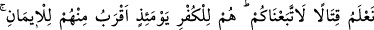
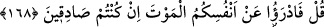

UHUD SAVAŞINDAKİ MUSÎBET
165. (Bedir’de) iki katını (düşmanınızın) başına getirdiğiniz bir musîbet,
(Uhud’da) kendi başınıza geldiği için mi “Bu nasıl oluyor!” dediniz? De ki: O, kendi
kusurunuzdandır. Şüphesiz Allah’ın her şeye gücü yeter.
166, 167. İki birliğin karşılaştığı gün sizin başınıza gelenler, ancak Allah’ın
dilemesiyle olmuştur ki, bu da, mü’minleri ayırdetmesi ve münâfıkları ortaya
çıkarması için idi. Bunlara: “Gelin, Allah yolunda çarpışın; ya da savunma yapın”
denildiği zaman, “Harbetmeyi bilseydik, elbette sizin peşinizden gelirdik” dediler.
Onlar o gün, îmandan çok, kâfirliğe yakın idiler. Ağızlarıyla, kalplerinde olmayanı
söylüyorlardı. Halbuki Allah, onların içlerinde gizlediklerini daha iyi bilir.
168. (Evlerinde) oturup da kardeşleri hakkında: “Bize uysalardı öldürülmezlerdi”
diyenlere, “Eğer doğru sözlü insanlar iseniz, canlarınızı ölümden kurtarın
bakalım!” de.
Müşriklerin başına iki katını getirdiğiniz bir belâ, sizin başınıza gelince mi: “Bu,
başımıza nereden geldi?” dediniz. Âyette söz konusu olan belâdan murad, Uhud günü
kendilerinden yetmiş kişinin öldürülmesinden ibâret olan musîbettir. Bu musîbetin iki
katından maksat da, Bedir günü yetmiş müşriğin öldürülüp yetmişinin esir edilmesi
şeklinde müşriklerin başına gelen belâdır. Âyetin mânası şöyledir:
“Sizin, müşriklerin başına getirdiğiniz belânın yarısı, müşrikler tarafından sizin
başınıza getirildi diye mi bu kadar âh u vah ediyor: “Bu musîbet başımıza nereden
geldi?” diyorsunuz. Âyetin başındaki soru edatı, münâfıkların: “Muhammed, Allah
katından gönderilmiş olsaydı, Uhud günü ordusu kâfirlere mağlup olmazdı.” sözlerine
karşı azarlamadır.